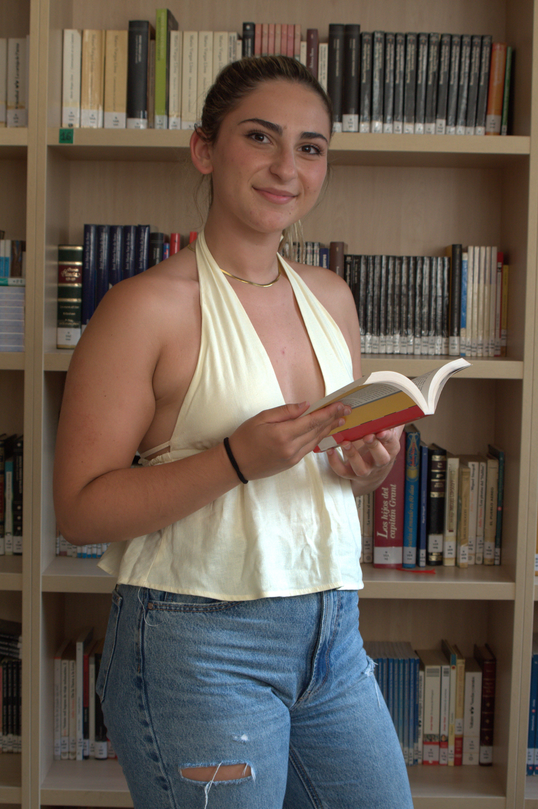
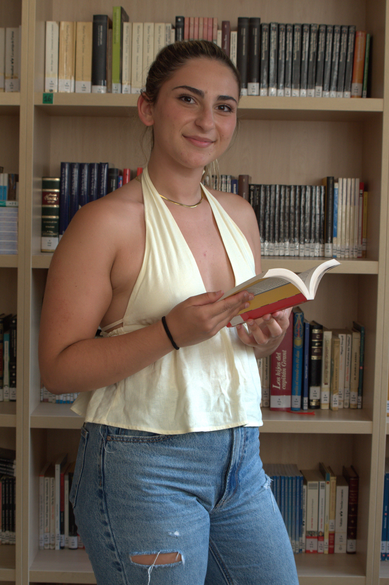
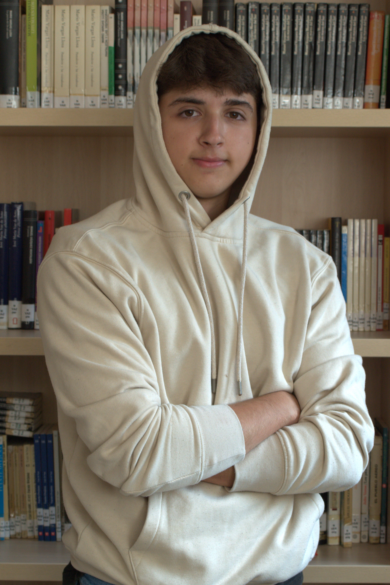
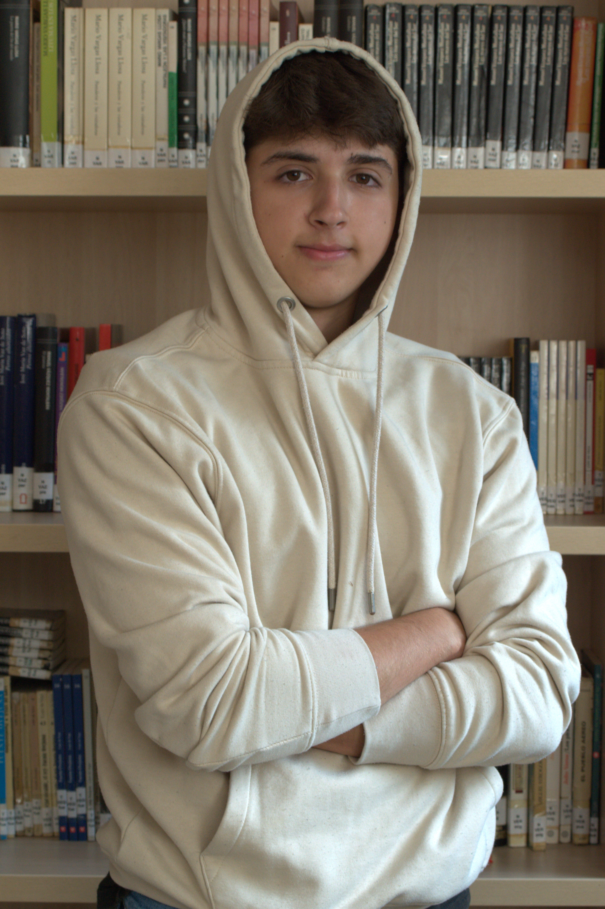
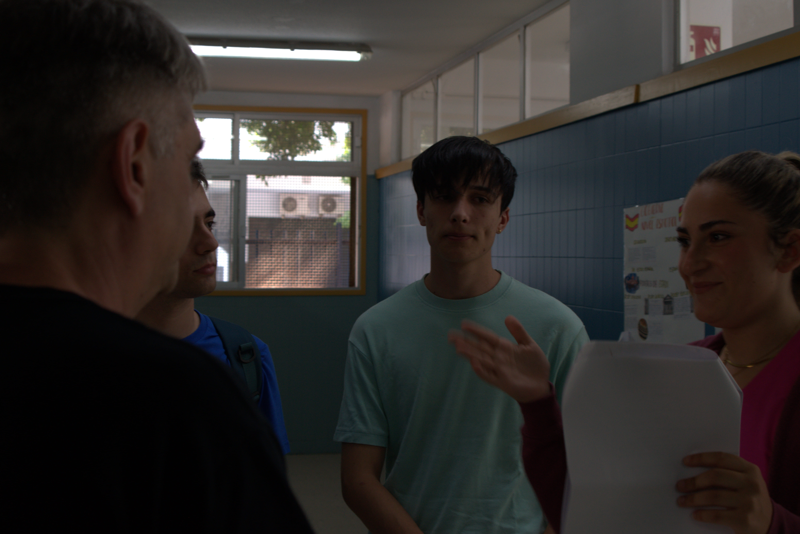
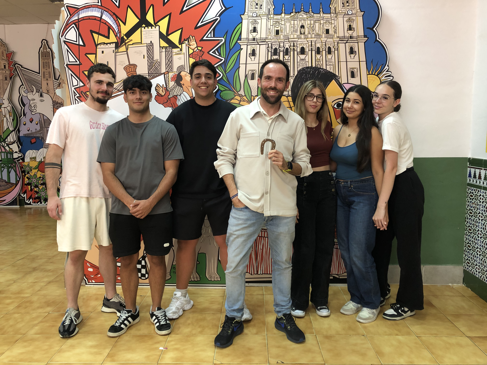

Quienes dan vida a la historia
Julián Hueltes como ALEX


Aranzazu Quero como ANA
 

Silvia Rojas como ALUMNA 1


Hugo Longay como ALUMNO 2


Aaron Ladines como ALUMNO 3
 

Laura Wagner como PATRICIA


Sonia López como FOTOCOPISTA


David Gutiérrez como HERRERO


Pablo Carrasco como BERNARDO

Miguel López - Auxiliar de Sonido


Andrés Mesa, Alejandro Delgado, Hugo Rosique, Laura Rojas, Miriam Cabrera y Paula Muñoz como ALUMNOS RETRO

Miguel Bueno - Director


José Miguel Castillo - Productor